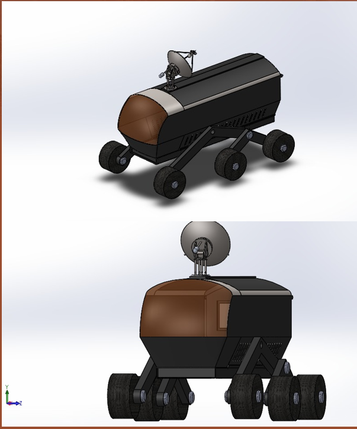
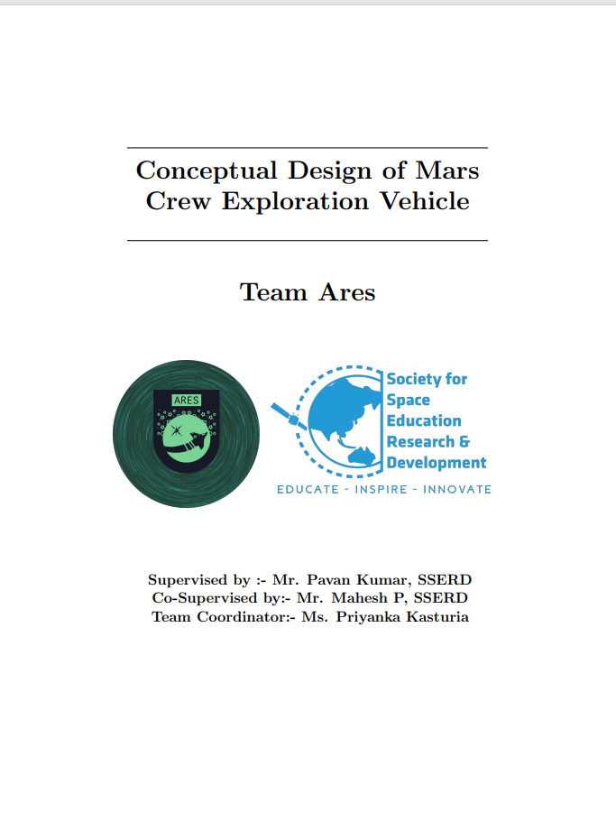

Conceptual Design of Mars Crew Exploration Vehicle
-

ABSTRACT
Mars once seemed far away, but as each year passes one begins to hear about it more often. The first step on Mars is the next big awaited news.Team Ares at SSERD believes in this pace of progress and has come up with a conceptual design for a Mars Crew Exploration Vehicle (MCEV). This vehicle will carry 4 astronauts on a journey to various exploration sites within a radius of 10 km from the base settlement in Mars. Beginning with the selection of landing site on Mars, this report consists of the Wheel Design and Suspension System development. The Environment Control and Life Support System (ECLSS) aboard the vehicle will mimic Earth like conditions for the crew, aided with proper lighting (SSLA) to maintain Human body metabolism. Apart from this, the cabinet material has been chosen considering the harsh climate Mars has in store for us. The vehicle also has a suite of instruments which will aid the exploration tasks and the mission would go astray without the decided communication via satellites in the Areostationary orbit. The report finally gives an insight on Power Generation using Li-SO_2 Batteries along with an auxiliary supply using Solar Cells and its distribution in the MCEV.
-

FULL REPORT
This MCEV concept uses unique solutions to most of problems that would be faced over crew vehicle over Martian or Lunar atmosphere. The crew vehicle uses innovative method for pressurization and also emphasis more on cost, quality and safety. Currently thousand of scientist and engineer are working together for colonizing mars and moon. In order to improve the mission and expedition quality the mcev can be used. It can solve transportation problems over mars/moon and also provides more advantages to crew for onsite exploration.
Download PDF